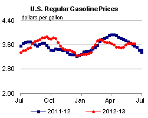
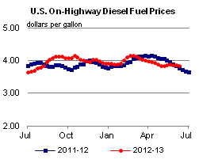
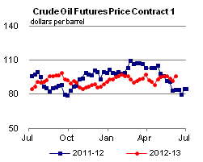
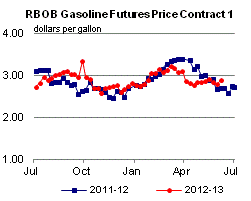
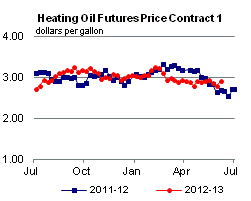
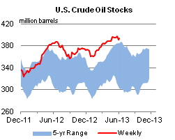
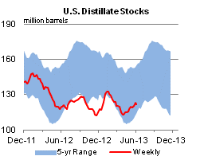
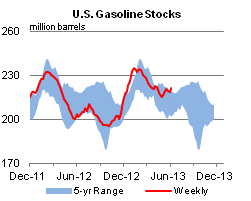
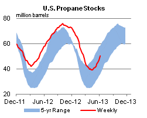

Released: June 12, 2013
Next Release: June 19, 2013
Non-OECD countries accounted for more than half of global liquid fuels use in April
In April, for the first time ever, estimated total liquid fuels consumption by the industrialized economies that are members of the Organization for Economic Cooperation and Development (OECD), at 44.3 million barrels per day (bbl/d), was below that of non-member countries who used 44.5 million bbl/d. In the June 2013 Short-Term Energy Outlook (STEO), EIA projects that total OECD liquids consumption will rise through the second half of the year, driven in part by increased consumption in the United States during the summer driving season. OECD consumption is expected to exceed non-OECD consumption for the second half of 2013, before falling back below non-OECD levels in 2014 (Figure 1).
{kind=link}
The OECD is an international economic organization of 34 countries, including the United States and much of Europe, which largely represents the most economically developed and industrialized countries in the world. While OECD total liquids consumption was about 60 percent of world oil consumption as recently as 2005, its share of world consumption has been declining since 1996 as developing countries such as China, India, Saudi Arabia, and Brazil have experienced strong economic growth accompanied by rapidly rising liquid fuel use. OECD total liquids consumption fell by about 9 percent from 2005 through 2012, while total non-OECD demand grew by more than 28 percent over the same period (Figure 2).
China, where total liquids demand has more than doubled since 2000, leads the growth in non-OECD liquids consumption. In addition, economic growth in major oil-producing countries, such as Saudi Arabia and Russia, has led to increases in their own oil consumption.
{kind=link}
Economies and populations in OECD member countries have grown slowly since 2000, and higher oil prices combined with policy changes have led to improvements in energy efficiency, reducing their liquid fuel consumption. Additionally, OECD oil consumption increased more slowly in response to economic growth, in part because service industries, which have a relatively low energy intensity, account for a large share of OECD economies. In the United States, the world's largest liquid fuels consumer, total liquid fuels consumption fell in 2012 for the sixth time in seven years, due to shifting consumer preferences, increased fuel efficiency, and sluggish economic growth. In April, U.S. total liquids consumption was 18.3 million bbl/d, down 0.3 percent year-over-year and 1.1 percent compared to March. However, EIA expects increased summer travel to raise total liquids consumption to an average of 18.7 million bbl/d over the second half of the year.
From 2005 through 2012, OECD annual GDP growth, weighted by its share of world oil consumption, has averaged 1.4 percent compared to 6.0 percent for non-OECD countries. Although non-OECD total demand was approximately 40 percent of the world's oil consumption in 2005, compared to around 50 percent today, non-OECD oil-weighted annual GDP growth reached levels of more than 8 percent in 2006 and 2007. Non-OECD economic growth was led by China from 2005 to 2012, with annual GDP growth averaging 10.6 percent over this period compared to annual GDP growth of 7.7 percent and 6.5 percent for India and Saudi Arabia respectively. In contrast, among major OECD liquid fuels consumers, annual GDP growth since 2005 averaged only 1.5 percent for Germany, 1.3 percent for the United States, and 0.6 percent for Japan.
In the June 2013 STEO, EIA said it expects oil-weighted GDP growth in OECD member countries to average 1.1 percent in 2013 and 2.1 percent in 2014, compared to non-OECD growth rates of 4.2 and 5.0 percent in 2013 and 2014, respectively. Total OECD liquids consumption is expected to reach 45.5 million bbl/d in 2013 compared to 44.6 million bbl/d for non-OECD countries. In 2014, total non-OECD liquids consumption climbs to an average of 46.0 million bbl/d compared to 45.2 million bbl/d for OECD member countries.
Gasoline up a cent; diesel fuel down two cents
The U.S. average retail price of regular gasoline increased one cent to $3.66 per gallon as of June 10, 2013, up eight cents from last year at this time. The Midwest price increased three cents to $3.87 per gallon, and the East Coast price is $3.49 per gallon, up a penny from last week. The Gulf Coast price decreased less than one cent to remain at $3.34 per gallon. Both the Rocky Mountain and West Coast prices dropped a penny, to $3.72 and $3.88 per gallon, respectively.
The national average diesel fuel price fell for the third straight week, decreasing two cents to $3.85 per gallon, seven cents higher than last year at this time. Prices were down in all regions of the nation. The East Coast, Midwest, Gulf Coast, and West Coast prices all fell two cents, to $3.84, $3.88, $3.75, and $3.95 per gallon, respectively. Rounding out the regions, the Rocky Mountain price remains at $3.87 per gallon, down less than a penny from last week.
Propane inventories gain
Text from the previous editions of This Week In Petroleum is accessible through a link at the top right-hand corner of this page.
|  |  | ||||||
| Retail Data | Change From Last | Retail Data | Change From Last | ||||
| 06/10/13 | Week | Year | 06/10/13 | Week | Year | ||
| Gasoline | 3.655 | Diesel Fuel | 3.849 | ||||
|  |  | ||||||||||||||||||||||||||
|
 | ||||||||||||||||||||||||||
| *Note: Crude Oil Price in Dollars per Barrel. | |||||||||||||||||||||||||||
|  |  | ||||||
|  |  | ||||||
| Stocks Data | Change From Last | Stocks Data | Change From Last | ||||
| 06/07/13 | Week | Year | 06/07/13 | Week | Year | ||
| Crude Oil | 393.8 | Distillate | 122.1 | ||||
| Gasoline | 221.5 | Propane | 50.340 | ||||